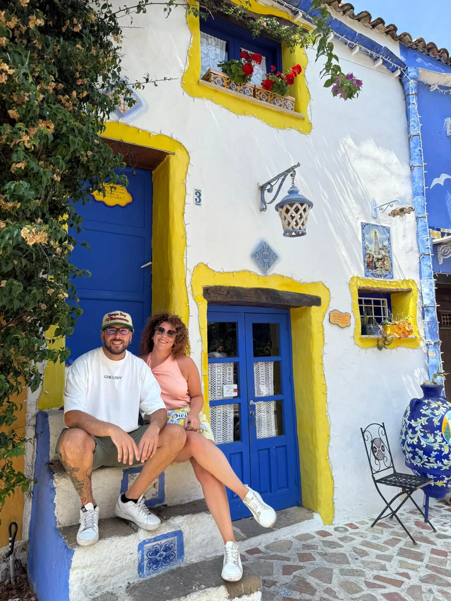

Apicoltori · Conza della Campania
Francescoe Rosanna
Una scelta di vita, un territorio, un miele.
- Apicoltura stanziale
- Oasi WWF di Conza
- A conduzione familiare

La nostra storia
Siamo venutiqui per scelta
Non siamo originari dell'Irpinia. Ci siamo trasferiti per amore della natura, attratti dalla Valle dell'Ofanto, dal Lago di Conza e da un ecosistema che pochi conoscono e ancora meno sanno proteggere.
Francesco si è avvicinato alle api durante il lavoro in dipartimento, dove la ricerca sulla biodiversità lo ha portato a capire il ruolo degli impollinatori nella catena del cibo e nella cura del paesaggio. Da lì è nata Vie del Lago.
Rosanna lo ha seguito per amore e non ha mai smesso di sostenerlo. Vie del Lago è un progetto a due: nelle decisioni, nel lavoro di ogni giorno, nella filosofia.
«Non abbiamo mai voluto fare miele industriale. Vogliamo fare il miele di questo posto, di questa stagione. Se non è abbastanza, preferiamo non produrlo.»
Cosa ci guida
Sei regoleche non cambiamo
Stanzialità
Le nostre api non si spostano: l'apiario Priscilla è fisso nell'Oasi di Conza. Ogni miele racconta un solo luogo, ed è questo che ci permette di parlare di cru.
Niente pastorizzazione
Non riscaldiamo il miele, lo filtriamo solo quanto serve e non aggiungiamo nulla. Così restano enzimi, profumi e complessità.
Trasparenza
Pubblichiamo i dati dell'alveare: temperatura, umidità, peso delle famiglie. Ogni produzione ha la sua analisi melissopalinologica.
Rispetto dell'ecosistema
Nell'Oasi WWF conviviamo con decine di specie protette. Nessun antibiotico; la varroa la gestiamo con acido ossalico.
Piccoli lotti
I lotti hanno il limite che danno il territorio e la stagione. Quando finiscono, finiscono: l'anno dopo sarà un miele diverso.
Rapporto diretto
Chi compra il nostro miele scrive a Francesco o a Rosanna. Ogni ordine è una conversazione, e molti clienti li conosciamo per nome.
Come è iniziata
La storiadi Vie del Lago
-
La formazione
Dalla scienza all'apiario
Francesco si laurea in Enologia e Viticoltura, poi in Scienze e Tecnologie Agrarie, e consegue il dottorato in Food Science. Negli anni in dipartimento la ricerca su biodiversità e impollinatori gli mostra quanto le api siano centrali, per il cibo e per la tenuta degli ecosistemi agricoli.
-
La scelta
Trasferirsi dove c'era la risposta
Avevano già un'idea precisa del miele che volevano fare. Si stabiliscono a Conza della Campania, dove oggi sono gli apiari: un ecosistema integro, l'Oasi WWF, le argille dell'Ofanto, fioriture rare come la sulla.
-
L'apiario Priscilla
Un progetto a due
Il nome dell'apiario, la scelta di non pastorizzare, l'idea del miele come cru: Vie del Lago nasce insieme. Arrivano le prime vendite dirette; i clienti scrivono, chiedono, tornano.
-
Oggi
Tre mieli, un territorio
Millefiori, Acacia e Sulla, in piccoli lotti, con i dati dell'alveare pubblicati. I clienti prenotano la stagione successiva mentre quella in corso si esaurisce. Vie del Lago è piccola per scelta, e vuole restarlo.